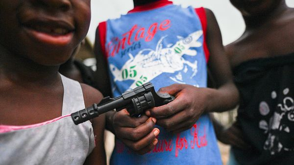

Jul 09, 2026 06:30 AM

HOW DO YOU judge whether children are responsible for their actions? The answer often depends on age. Given how slowly human character develops, most countries do not hold the youngest to be criminally responsible, even if they commit heinous acts. In the eyes of the law the least mature, who cannot grasp the consequences of what they do, are reckoned to be doli incapax—incapable of evil.
Yet that raises a second question: how old is old enough to count? Countries answer this in wildly different ways, as they wrestle with the task of defining the age of criminal responsibility. Now, regrettably, lawmakers in many places are pushing it downwards·. In February Argentina lowered its age from 16 to 14. Others, from the Maldives to South Korea, may do something similar. Gangs have been a scourge in Sweden for many years. It now plans to reduce the age of responsibility for the most serious crimes. Last month Northern Ireland blocked a motion that would have raised the age from just ten—the joint-lowest in Europe—to 14.
Dig deeper
Politicians are listening to voters angry about dramatic and well-publicised crimes—and you can understand why. Indonesians were horrified when a 12-year-old stabbed her mother 26 times, killing her. In Colombia a 15-year-old boy last year shot and killed a senator campaigning to be president. In Sweden and elsewhere, gangs use children to attack properties or people.
Criminals like to recruit young foot soldiers because they are cheap and pliable. They often lack the impulse-control and judgment that most adults possess. Neuroscientists suggest that the brain keeps developing well into adulthood, perhaps even into the mid-20s, which may be why so much crime is committed by the young. Teens are often enticed into gangs by the promise of quick money. Criminals also calculate that the youngest may dodge punishment if caught. In Britain drug-dealers use children precisely because they are under-age.
You can see, therefore, why lawmakers want to criminalise the acts of ever younger people. Authorities may hope that doing so will remove an incentive for gangs to recruit them. They should reconsider, if only because lowering the age of responsibility is unjust—especially if that involves children younger than the low teens.
Even if you disagree with the moral argument, you should heed the practical one. Experience suggests that lowering the age will not work. When Denmark took it from 15 to 14 in 2010, crime rates rose. The country reversed course soon after. Britain found that, when the age of responsibility drops, gangs just recruit even younger children.
Prosecuting young children as criminals is also a way of ensuring that ever more of them will emerge from the system as hardened villains. In Queensland, Australia, where ten-year-olds are counted as criminally responsible, 96% of children who are released from prison go on to reoffend within a year.
It is wiser to try rehabilitation. That will often mean securing young wrongdoers safely away from wider society. But rather than punishing them, the goal should be to tackle the social, educational and other factors that first drew them into criminality. One focus should be on those brains. In Britain a fifth of children in the youth-justice system have learning difficulties. Another should be to deal with social problems early by, say, providing mentors. In Sweden around half of all kids who are investigated for a serious crime were flagged to social services for worrying behaviour before the age of 12.
Nothing will stop all wrongdoing by children. There should be severe criminal penalties for adults who recruit and exploit the young. But the goal for children should be to create better childhoods, with fewer reasons to go into crime, and to prevent criminal children from becoming criminal adults. ■
Subscribers to The Economist can sign up to our Opinion newsletter, which brings together the best of our leaders, columns, guest essays and reader correspondence.